The Game of Life

Histoire
Le jeu de la vie est un automate cellulaire imaginé en 1970 par John Horton Conway, sur une idée de John Von Neumann. Ce n’est pas réellement un jeu car il n’y a pas de joueur, ce sont des règles pré établies qui génèrent ou désintègrent des cellules sur une grille à deux dimensions. L'objectif est la survie et la croissance d'une population représentée par des des cellules tant au sens biologique que topographique...
Règles
Une cellule vivante est représentée par une case jaune. Une case grise/blanche signifie qu'il n'y a pas de cellule.
L'état de l'automate à l'étape n est défini en fonction de son état à l'étape n − 1.
L'évolution de l'état d'une cellule dépend de l'état de ses 8 plus proches voisines :
- => Si une cellule a 0 ou 1 voisine, elle meurt.
- => Si une cellule a 2 ou 3 voisines, elle continue de vivre.
- => Si une cellule a 4 cellule ou plus, elle meurt (surpopulation).
- => Si une case vide a trois cellules vivantes, alors elle devient une cellule vivante.
Jouer
Avec ces 4 règles, il est possible de créer des combinaisons étonnantes :
-
Le bloc
-
La ruche
-
La barge

-
La longue barge
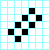
-
Le bateau

-
Le canoë
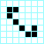
-
Le long canoë
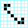
-
L'hameçon
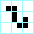
-
Le double hameçon
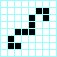
-
Le navire
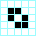
-
Le long navire
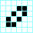
-
Le porte-avion
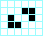
-
Le serpent
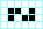
-
Le tube
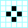
-
L'agar
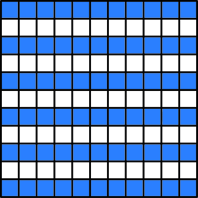
-
La mare
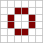
-
Le pain

-
Le blinker
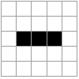
-
La grenouille

-
Le pentadécathlon

-
La croix

-
L'étoile

-
La galaxie

-
L'horloge

-
L'octogone

-
Les deux blocks
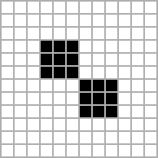
-
Le beacon

-
Le pulsar

-
Le planeur

-
Le petit vaisseau

-
Le vaisseau moyen

-
Le grand vaisseau
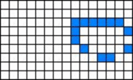
-
Le spacefiller

-
Le glider gun
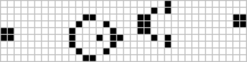
-
Le puffer train